Chapitre 4 Gbané (2021), masse de l’oeuf
4.1 Présentation
Essai d’alimentation de cailles avec 7 régimes différents, 3 répétitions. Mesures effectuées à 3 reprise durant 3 semaines consécutives.
- 0.15%B.o_0.45%C.l
- 0.30%B.o_0.30%C.l
- WC
- 0.45%B.o_0.15%C.l
- 0.6%C.l
- 0.6%B.o
- YC
Variable explicative :
diet: le régime
Variable expliquée :
egg: la masse de l’oeuf (g)
4.2 Les données
df <- read_csv("data/degg.csv")
df <- df %>%
add_column(id = 1:nrow(.), .before = 1) %>%
mutate(week = factor(week),
diet = factor(diet))
df_copy <- df # copie## Rows: 63
## Columns: 11
## $ id <int> 1, 2, 3, 4, 5, 6, 7, 8, 9, 10, 11, 12, 13, 14, 15, 16, 17, 18~
## $ week <fct> Week 3, Week 3, Week 3, Week 3, Week 3, Week 3, Week 3, Week ~
## $ diet <fct> 0.15%B.o_0.45%C.l, 0.15%B.o_0.45%C.l, 0.15%B.o_0.45%C.l, 0.30~
## $ egg <dbl> 10.900, 10.900, 10.840, 11.070, 11.830, 10.940, 10.000, 10.39~
## $ shel <dbl> 1.310, 1.800, 1.350, 1.550, 1.930, 1.900, 1.130, 1.020, 0.980~
## $ yol <dbl> 3.890, 3.750, 3.340, 3.230, 4.040, 2.860, 3.410, 3.890, 3.200~
## $ alb <dbl> 5.700, 5.350, 6.150, 6.290, 5.860, 6.180, 5.460, 5.480, 5.110~
## $ indl <dbl> 82.69, 82.29, 81.92, 80.82, 80.76, 80.42, 83.91, 84.56, 84.21~
## $ inda <dbl> 1.13, 0.69, 0.75, 3.08, 3.32, 2.84, -0.98, -0.28, -0.47, 2.17~
## $ indb <dbl> 56.98, 56.99, 58.25, 68.49, 70.23, 70.96, 45.13, 45.77, 45.39~
## $ chol_tot <dbl> 22.480, 33.990, 20.800, 6.374, 3.727, 3.393, 27.830, 32.980, ~4.3 Semaine 3
4.3.1 Exploration visuelle, boxplots
ggplot(df, aes(x = diet, y = egg)) +
geom_boxplot() +
theme_bw() +
xlab("Régime") + ylab("Masse de l'oeuf (g)") +
theme(axis.text.x = element_text(angle = 45, color = "black", vjust = 1, hjust = 1))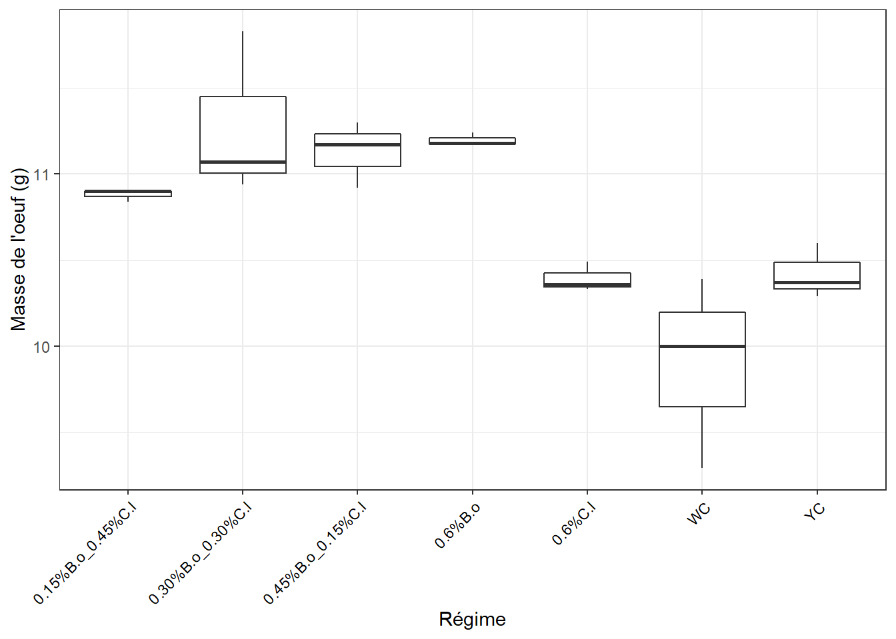
4.3.2 Identification des échantillons aberrants extrêmes
df_out <- df %>%
group_by(diet) %>%
identify_outliers(egg) %>%
dplyr::select(id, diet, egg, is.outlier, is.extreme)
df_out## [1] id diet egg is.outlier is.extreme
## <0 rows> (or 0-length row.names)=> Pas d’observation aberrante extrême
4.3.3 Le modèle ANOVA
## Anova Table (Type II tests)
##
## Response: egg
## Sum Sq Df F value Pr(>F)
## diet 4.8337 6 9.1667 0.000345 ***
## Residuals 1.2304 14
## ---
## Signif. codes: 0 '***' 0.001 '**' 0.01 '*' 0.05 '.' 0.1 ' ' 1À ce stade certains régimes se distinguent par une différence d’effets sur la masse de la coquille. Mais vérifions la validité de l’ANOVA.
4.3.4 Normalité des résidus
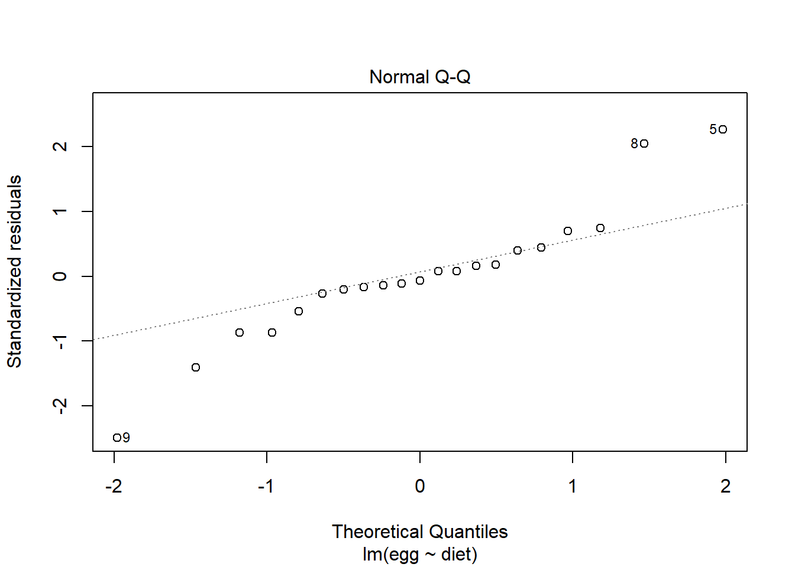
## # A tibble: 1 x 3
## variable statistic p.value
## <chr> <dbl> <dbl>
## 1 residuals(lm) 0.928 0.1264.3.5 Homogénéité des variances
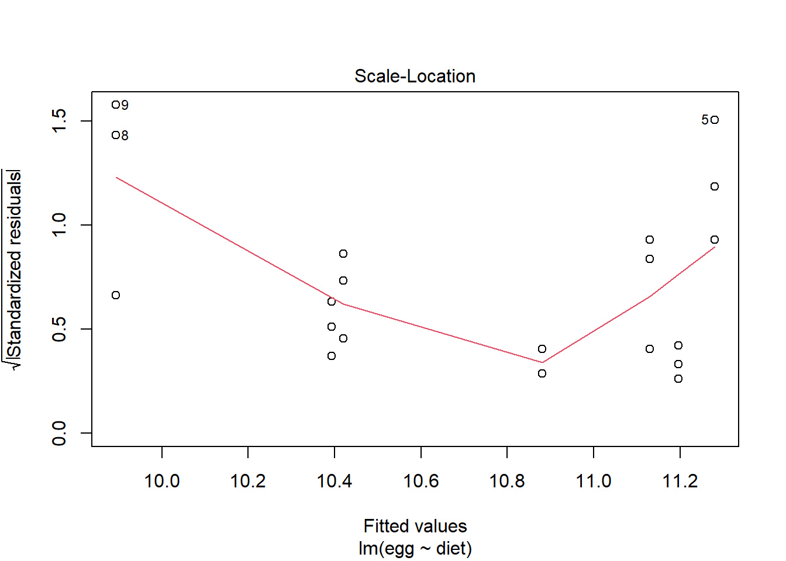
## # A tibble: 1 x 4
## df1 df2 statistic p
## <int> <int> <dbl> <dbl>
## 1 6 14 1.21 0.359On retiendra que la conclusion de l’ANOVA peut être considérée valide : => Différence d’effet significative entre certains régimes sur la masse de la coquille à cette date.
4.3.6 Comparaisons par paires
cm <- (SNK.test(lm, "diet", group = TRUE))$groups %>%
mutate(diet = rownames(.)) %>%
dplyr::select(diet, egg, groups) %>%
as_tibble()
cm## # A tibble: 7 x 3
## diet egg groups
## <chr> <dbl> <chr>
## 1 0.30%B.o_0.30%C.l 11.3 a
## 2 0.6%B.o 11.2 a
## 3 0.45%B.o_0.15%C.l 11.1 a
## 4 0.15%B.o_0.45%C.l 10.9 ab
## 5 YC 10.4 bc
## 6 0.6%C.l 10.4 bc
## 7 WC 9.89 c4.3.7 Graphe avec les comparaisons
ggplot(cm, aes(x = diet, y = egg)) +
geom_bar(stat = "identity", color = "blue", fill = "grey", width = 0.6) +
ylim(0, 15) +
theme_bw() +
xlab("Régime") + ylab("Masse de l'oeuf (g)") +
theme(axis.text.x = element_text(angle = 45, color = "black", vjust = 1, hjust = 1)) +
geom_text(aes(label = groups), vjust = -0.5, size = 4)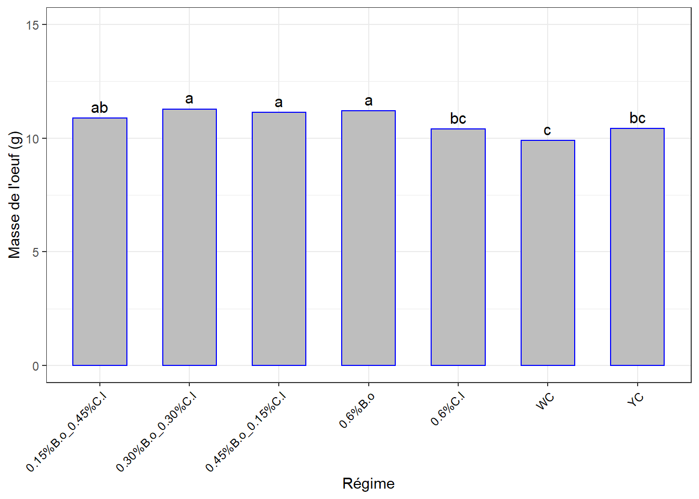
4.4 Semaine 4
4.4.1 Exploration visuelle, boxplots
ggplot(df, aes(x = diet, y = egg)) +
geom_boxplot() +
theme_bw() +
xlab("Régime") + ylab("Masse de l'oeuf (g)") +
theme(axis.text.x = element_text(angle = 45, color = "black", vjust = 1, hjust = 1))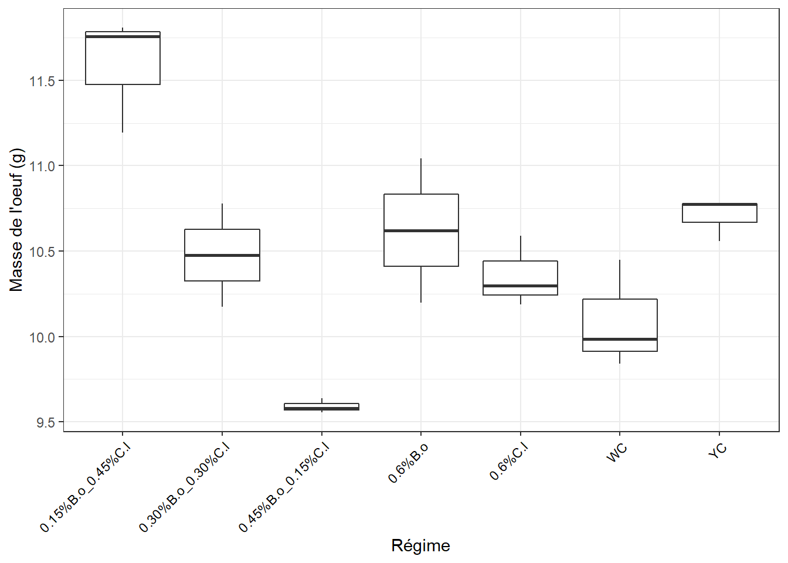
4.4.2 Identification des échantillons aberrants extrêmes
df_out <- df %>%
group_by(diet) %>%
identify_outliers(egg) %>%
dplyr::select(id, diet, egg, is.outlier, is.extreme)
df_out## [1] id diet egg is.outlier is.extreme
## <0 rows> (or 0-length row.names)=> Pas d’observation aberrante extrême
4.4.3 Le modèle ANOVA
## Anova Table (Type II tests)
##
## Response: egg
## Sum Sq Df F value Pr(>F)
## diet 6.7529 6 14.355 2.898e-05 ***
## Residuals 1.0977 14
## ---
## Signif. codes: 0 '***' 0.001 '**' 0.01 '*' 0.05 '.' 0.1 ' ' 1À ce stade certains régimes se distinguent par une différence d’effets sur la masse de la coquille. Mais vérifions la validité de l’ANOVA.
4.4.4 Normalité des résidus
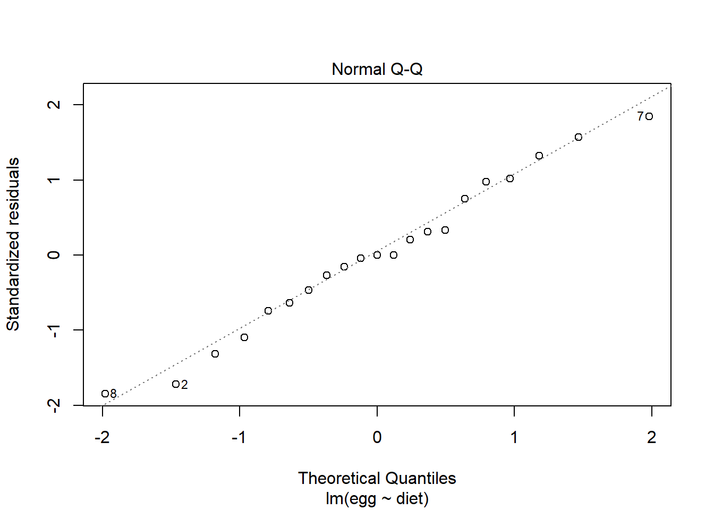
## # A tibble: 1 x 3
## variable statistic p.value
## <chr> <dbl> <dbl>
## 1 residuals(lm) 0.980 0.9234.4.5 Homogénéité des variances
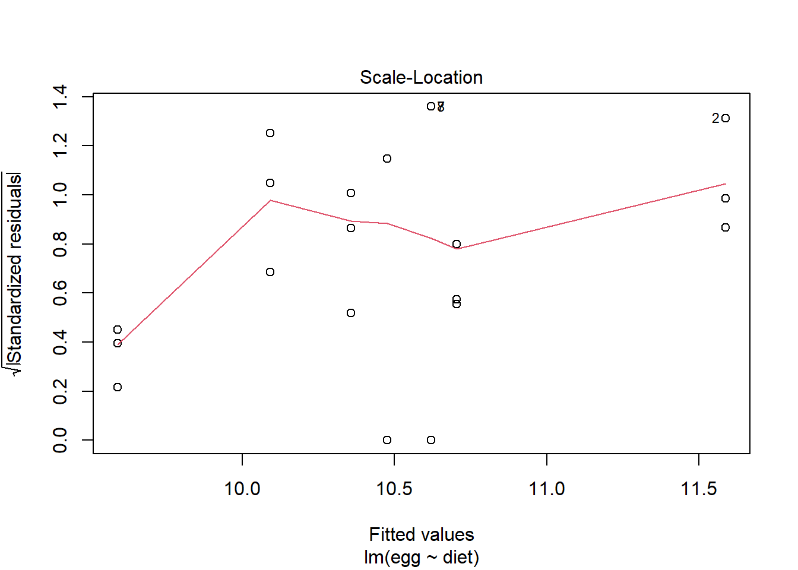
## # A tibble: 1 x 4
## df1 df2 statistic p
## <int> <int> <dbl> <dbl>
## 1 6 14 0.571 0.747On retiendra que la conclusion de l’ANOVA peut être considérée valide : => Différence d’effet significative entre certains régimes sur la masse de la coquille à cette date.
4.4.6 Comparaisons par paires
cm <- (SNK.test(lm, "diet", group = TRUE))$groups %>%
mutate(diet = rownames(.)) %>%
dplyr::select(diet, egg, groups) %>%
as_tibble()
cm## # A tibble: 7 x 3
## diet egg groups
## <chr> <dbl> <chr>
## 1 0.15%B.o_0.45%C.l 11.6 a
## 2 YC 10.7 b
## 3 0.6%B.o 10.6 b
## 4 0.30%B.o_0.30%C.l 10.5 b
## 5 0.6%C.l 10.4 b
## 6 WC 10.1 b
## 7 0.45%B.o_0.15%C.l 9.59 c4.4.7 Graphe avec les comparaisons
ggplot(cm, aes(x = diet, y = egg)) +
geom_bar(stat = "identity", color = "blue", fill = "grey", width = 0.6) +
ylim(0, 15) +
theme_bw() +
xlab("Régime") + ylab("Masse de l'oeuf (g)") +
theme(axis.text.x = element_text(angle = 45, color = "black", vjust = 1, hjust = 1)) +
geom_text(aes(label = groups), vjust = -0.5, size = 4)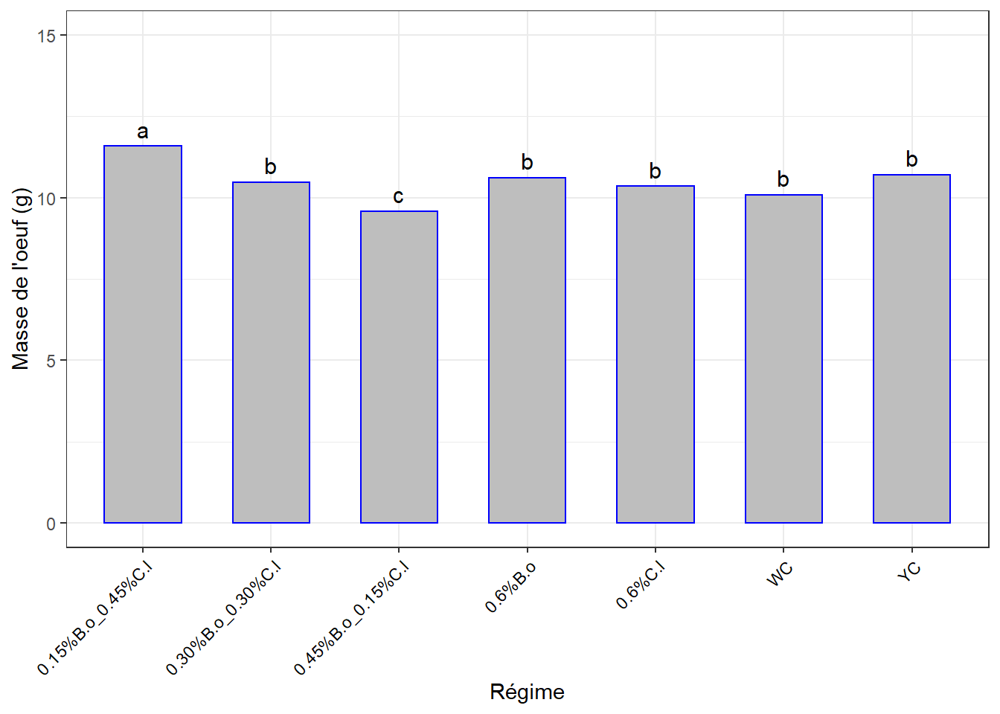
4.5 Semaine 5
4.5.1 Exploration visuelle, boxplots
ggplot(df, aes(x = diet, y = egg)) +
geom_boxplot() +
theme_bw() +
xlab("Régime") + ylab("Masse de l'oeuf (g)") +
theme(axis.text.x = element_text(angle = 45, color = "black", vjust = 1, hjust = 1))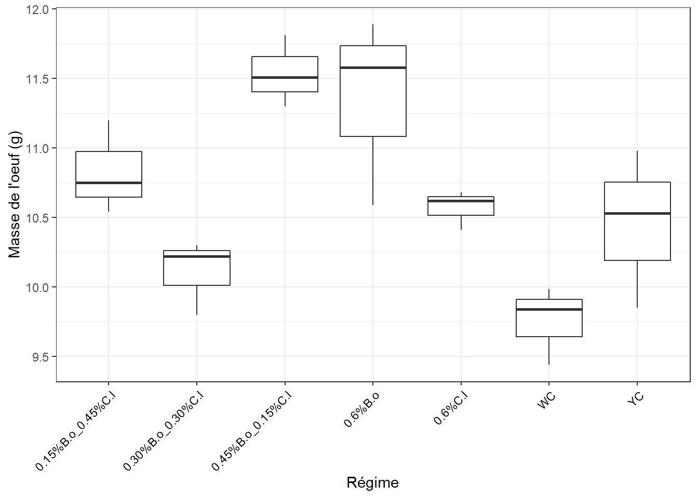
4.5.2 Identification des échantillons aberrants extrêmes
df_out <- df %>%
group_by(diet) %>%
identify_outliers(egg) %>%
dplyr::select(id, diet, egg, is.outlier, is.extreme)
df_out## [1] id diet egg is.outlier is.extreme
## <0 rows> (or 0-length row.names)=> Pas d’observation aberrante extrême
4.5.3 Le modèle ANOVA
## Anova Table (Type II tests)
##
## Response: egg
## Sum Sq Df F value Pr(>F)
## diet 7.3800 6 7.5804 0.0009092 ***
## Residuals 2.2717 14
## ---
## Signif. codes: 0 '***' 0.001 '**' 0.01 '*' 0.05 '.' 0.1 ' ' 1À ce stade certains régimes se distinguent par une différence d’effets sur la masse de la coquille. Mais vérifions la validité de l’ANOVA.
4.5.4 Normalité des résidus
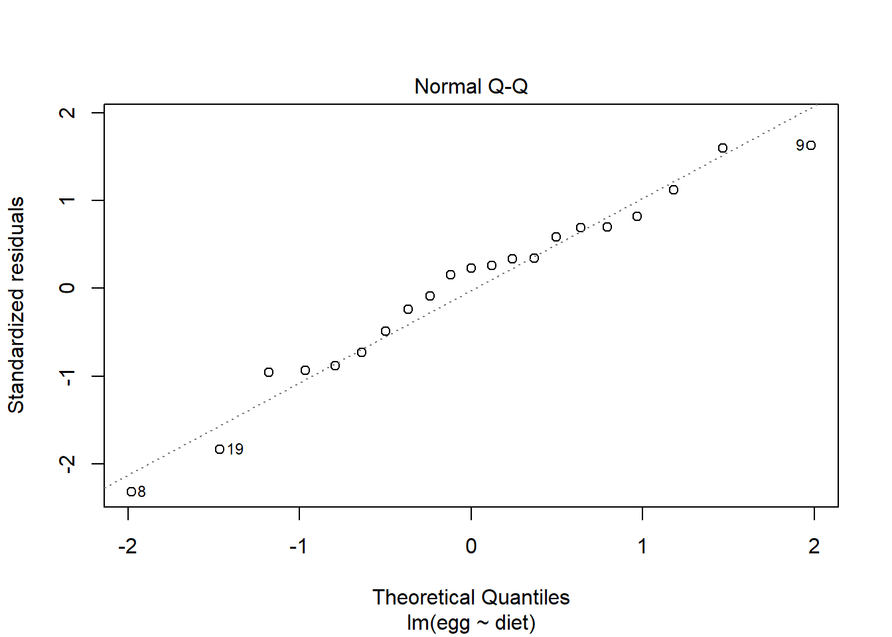
## # A tibble: 1 x 3
## variable statistic p.value
## <chr> <dbl> <dbl>
## 1 residuals(lm) 0.965 0.6174.5.5 Homogénéité des variances
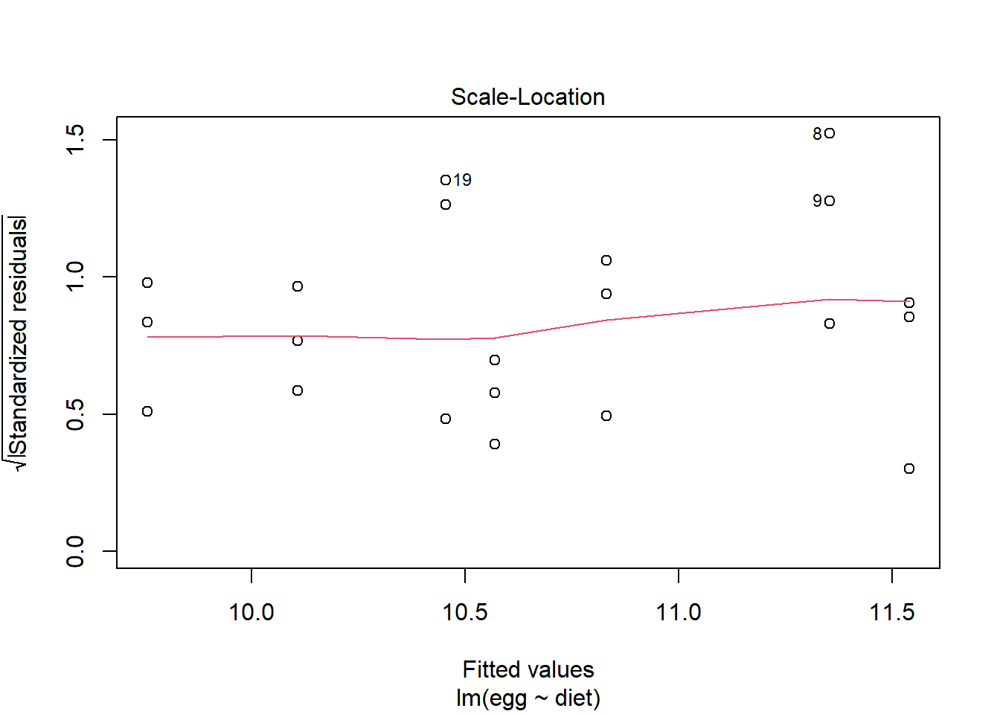
## # A tibble: 1 x 4
## df1 df2 statistic p
## <int> <int> <dbl> <dbl>
## 1 6 14 0.585 0.737On retiendra que la conclusion de l’ANOVA peut être considérée valide : => Différence d’effet significative entre certains régimes sur la masse de la coquille à cette date.
4.5.6 Comparaisons par paires
cm <- (SNK.test(lm, "diet", group = TRUE))$groups %>%
mutate(diet = rownames(.)) %>%
dplyr::select(diet, egg, groups) %>%
as_tibble()
cm## # A tibble: 7 x 3
## diet egg groups
## <chr> <dbl> <chr>
## 1 0.45%B.o_0.15%C.l 11.5 a
## 2 0.6%B.o 11.4 ab
## 3 0.15%B.o_0.45%C.l 10.8 abc
## 4 0.6%C.l 10.6 bcd
## 5 YC 10.5 bcd
## 6 0.30%B.o_0.30%C.l 10.1 cd
## 7 WC 9.75 d4.5.7 Graphe avec les comparaisons
ggplot(cm, aes(x = diet, y = egg)) +
geom_bar(stat = "identity", color = "blue", fill = "grey", width = 0.6) +
ylim(0, 15) +
theme_bw() +
xlab("Régime") + ylab("Masse de l'oeuf (g)") +
theme(axis.text.x = element_text(angle = 45, color = "black", vjust = 1, hjust = 1)) +
geom_text(aes(label = groups), vjust = -0.5, size = 4)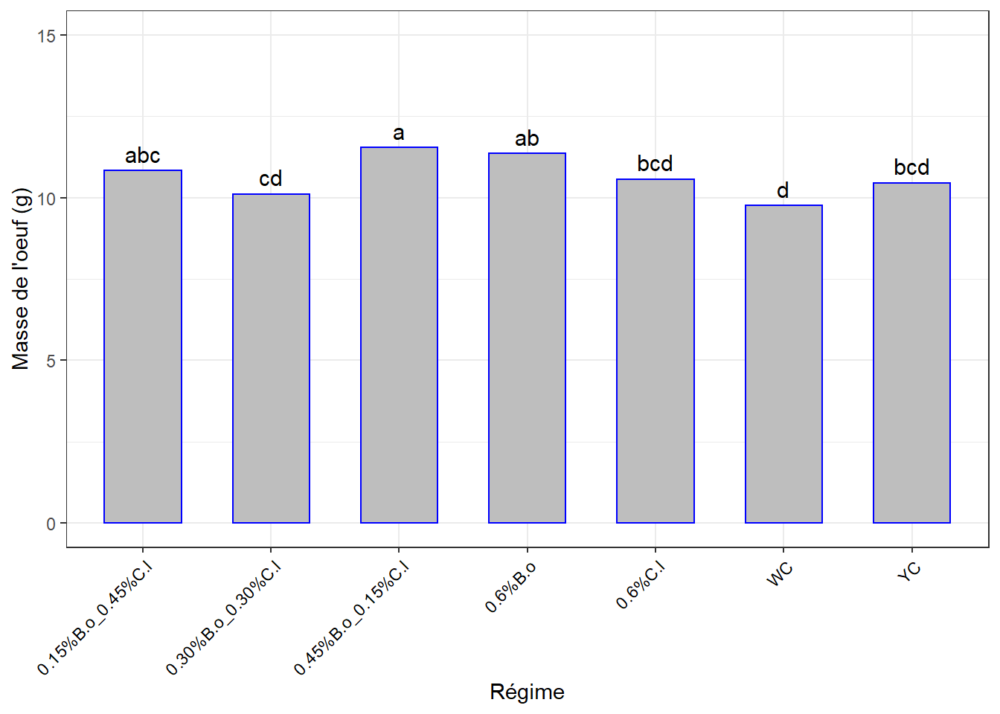
4.5.8 Évolution de la masse de l’oeuf dans le temps selon les régimes
df_ic <- summarySE(df_copy, measurevar = "egg", groupvars = c("week", "diet"))
#write_csv(df_ic, "tab/egg_moy_temps.csv")
df_ic## week diet N egg sd se ci
## 1 Week 3 0.15%B.o_0.45%C.l 3 10.880000 0.03464102 0.02000000 0.08605305
## 2 Week 3 0.30%B.o_0.30%C.l 3 11.280000 0.48072861 0.27754879 1.19419608
## 3 Week 3 0.45%B.o_0.15%C.l 3 11.130000 0.19313208 0.11150486 0.47976668
## 4 Week 3 0.6%B.o 3 11.196667 0.03785939 0.02185813 0.09404794
## 5 Week 3 0.6%C.l 3 10.393333 0.08504901 0.04910307 0.21127344
## 6 Week 3 WC 3 9.893333 0.55770362 0.32199034 1.38541261
## 7 Week 3 YC 3 10.420000 0.16093477 0.09291573 0.39978413
## 8 Week 4 0.15%B.o_0.45%C.l 3 11.586667 0.34187766 0.19738316 0.84927118
## 9 Week 4 0.30%B.o_0.30%C.l 3 10.475500 0.30150000 0.17407111 0.74896752
## 10 Week 4 0.45%B.o_0.15%C.l 3 9.590667 0.04202777 0.02426474 0.10440276
## 11 Week 4 0.6%B.o 3 10.620500 0.42250000 0.24393049 1.04954818
## 12 Week 4 0.6%C.l 3 10.357667 0.20845703 0.12035272 0.51783597
## 13 Week 4 WC 3 10.091667 0.31845617 0.18386076 0.79108899
## 14 Week 4 YC 3 10.704667 0.12617580 0.07284763 0.31343807
## 15 Week 5 0.15%B.o_0.45%C.l 3 10.830000 0.33719431 0.19467922 0.83763709
## 16 Week 5 0.30%B.o_0.30%C.l 3 10.106667 0.26857649 0.15506271 0.66718100
## 17 Week 5 0.45%B.o_0.15%C.l 3 11.540000 0.25632011 0.14798649 0.63673446
## 18 Week 5 0.6%B.o 3 11.353333 0.67899435 0.39201757 1.68671548
## 19 Week 5 0.6%C.l 3 10.570000 0.14177447 0.08185353 0.35218730
## 20 Week 5 WC 3 9.755000 0.28201241 0.16281994 0.70055767
## 21 Week 5 YC 3 10.453333 0.56888780 0.32844753 1.41319565ggplot(df_ic, aes(x = week, y = egg, colour = diet, group = diet)) +
geom_line(size = 1) +
geom_point(size = 2) +
ylab("Masse de l'oeuf - g") + xlab("Temps") +
theme_bw()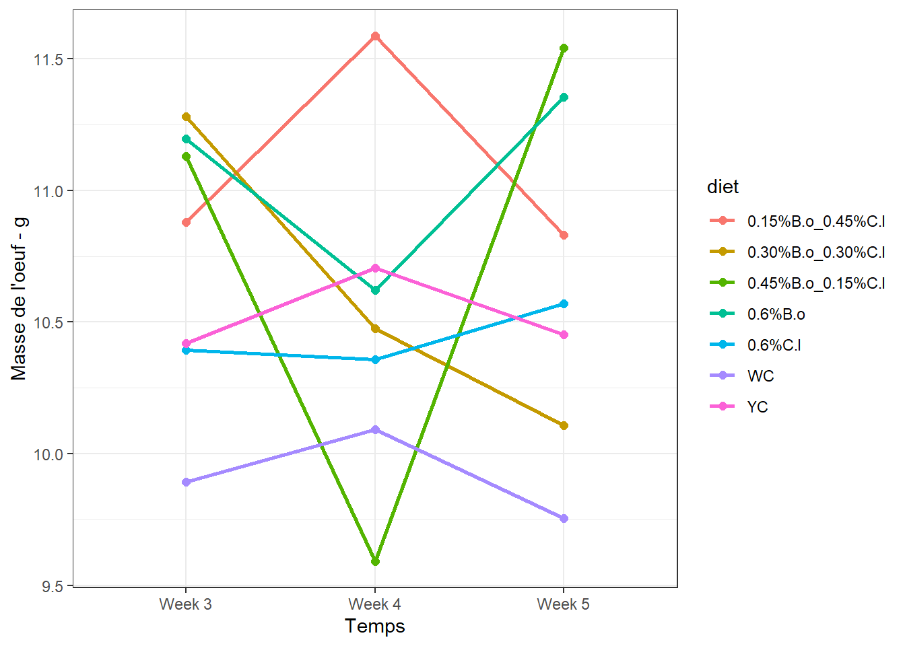
Figure impressionnante, mais tenir compte des valeurs de l’axe des ordonnées. Nous sommes dans le gramme en plus !
4.6 Pourquoi j’ai opté pour une analyse univariée
En associant le temps pour faire du bivarié, voici un cas où l’interaction s’avère significative.
lm <- lm(egg ~ week * diet,
contrasts = list(week = contr.sum, diet = contr.sum),
data = df_copy)
Anova(lm, type = 3)## Anova Table (Type III tests)
##
## Response: egg
## Sum Sq Df F value Pr(>F)
## (Intercept) 7118.7 1 65000.7276 < 2.2e-16 ***
## week 0.7 2 3.1670 0.05235 .
## diet 8.8 6 13.3923 2.027e-08 ***
## week:diet 10.2 12 7.7358 2.607e-07 ***
## Residuals 4.6 42
## ---
## Signif. codes: 0 '***' 0.001 '**' 0.01 '*' 0.05 '.' 0.1 ' ' 1Dans un tel cas il y a 2 alternatives pour la suite :
La première consiste à faire une ANOVA à un facteur sur la variable
grpqui est le croisement deweek X diet. Puis, si l’effet est significatif, des comparaisons multiples sont réalisées pour mettre en évidence les moyennes significativement différentes 2 à 2.La seconde solution consiste à réaliser les comparaisons des moyennes relatives aux modalités d’un facteur, séparément pour chacune des modalités de l’autre facteur. Par exemple, comparer les moyennes des masses d’oeuf par type de régime, semaine par semaine.
Dans l’esprit, c’est un peu comme si on faisait une ANOVA à un facteur (qui serait le régime) et ses comparaisons multiples subséquentes (pour chaque semaine).
Ici avec 7 régimes et 3 semaines il y a 21 combinaisons dans la variable de groupe. L’interprétation risque d’être compliquée.
Alors pourquoi ne pas partir du plus simple, au lieu de commencer par le plus compliqué et finalement être obligé de revenir au plus simple.
Les conditions de l’ANOVA valide sont respectées, alors en exploitant l’alternative 1, on refait le modéle ANOVA avec le facteur de regroupement.
df <- df_copy %>%
dplyr::select(id, week, diet, egg) %>%
mutate(grp = interaction(week, diet, sep = "_")) # variable de groupe## Anova Table (Type II tests)
##
## Response: egg
## Sum Sq Df F value Pr(>F)
## grp 19.6604 20 8.9759 1.627e-09 ***
## Residuals 4.5998 42
## ---
## Signif. codes: 0 '***' 0.001 '**' 0.01 '*' 0.05 '.' 0.1 ' ' 1=> Différences significatives
4.6.0.1 Comparaisons par paires
mc <- (SNK.test(lm, "grp", group = TRUE))$groups %>%
mutate(grp = rownames(.)) %>%
dplyr::select(grp, egg, groups) %>%
as_tibble()
mc## # A tibble: 21 x 3
## grp egg groups
## <chr> <dbl> <chr>
## 1 Week 4_0.15%B.o_0.45%C.l 11.6 a
## 2 Week 5_0.45%B.o_0.15%C.l 11.5 a
## 3 Week 5_0.6%B.o 11.4 ab
## 4 Week 3_0.30%B.o_0.30%C.l 11.3 abc
## 5 Week 3_0.6%B.o 11.2 abc
## 6 Week 3_0.45%B.o_0.15%C.l 11.1 abc
## 7 Week 3_0.15%B.o_0.45%C.l 10.9 abcd
## 8 Week 5_0.15%B.o_0.45%C.l 10.8 abcd
## 9 Week 4_YC 10.7 abcde
## 10 Week 4_0.6%B.o 10.6 bcdef
## # ... with 11 more rows4.6.0.2 Graphe avec les comparaisons
ggplot(mc, aes(x = grp, y = egg)) +
geom_bar(stat = "identity", color = "blue", fill = "grey", width = 0.6) +
ylim(0, 15) +
theme_bw() +
xlab("Combinaison Week-Diet") + ylab("Masse de l'oeuf (g)") +
#theme(axis.text.x = element_text(angle = 45, color = "black", vjust = 1, hjust = 1)) +
geom_text(aes(label = groups, y = 12.5), size = 4) +
coord_flip()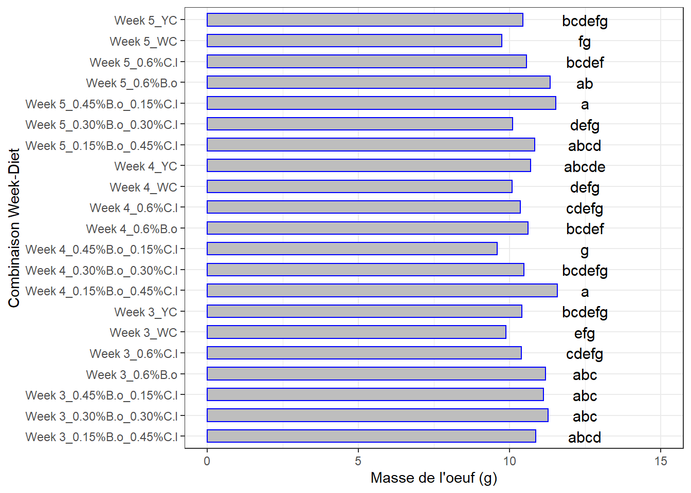
Il faudra éventuellement 21 bonnes tasses de café avant de pouvoir déméler les uns des autres !
Il est peut-être plus parcimonieux d’aller pas à pas. Le graphique d’évolution d’une semaine à l’autre (le précédent) peut être intéressant pour intégrer les semaines.